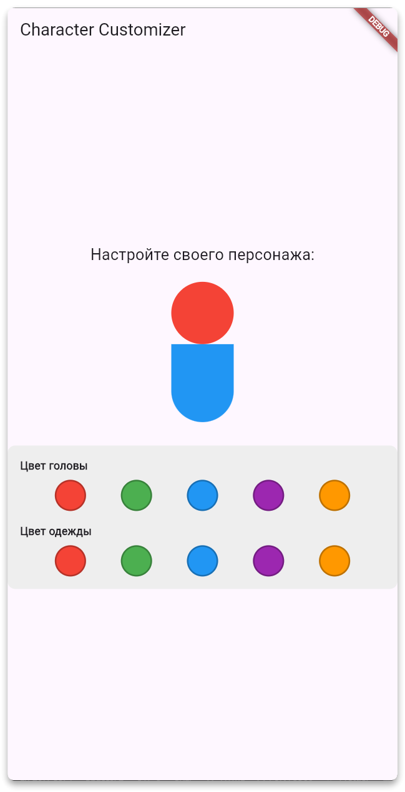

Provider — Практика
Практика
Теперь, когда мы разобрались с проблемами передачи состояния через дерево виджетов и изучили, как Provider помогает их решить, пришло время применить полученные знания на практике!
Наша задача — создать небольшое приложение, используя Provider для управления состоянием.
Что нам предстоит сделать:
У нас есть готовое приложение, которое работает, но имеет серьёзные недостатки в архитектуре — состояние передаётся через множество уровней виджетов, что делает код сложным для понимания и поддержки.
Как настоящие разработчики, мы проведём рефакторинг этого кода:
- 📖 Изучим существующий код и поймём его структуру
- 🔧 Переработаем архитектуру с использованием Provider
- ✅ Убедимся, что приложение работает корректно и эффективно
- 🧪 Протестируем результат на отсутствие ошибок
Это отличная возможность попрактиковаться в одной из самых важных задач разработчика — улучшении существующего кода и его оптимизации!
Начинаем работу
Скачайте проект по этой ссылке
или создаём новый проект и копируй этот код в файл main
Файл main.dart


import 'package:flutter/material.dart';
void main() {
runApp(const MyApp());
}
class MyApp extends StatelessWidget {
const MyApp({super.key});
@override
Widget build(BuildContext context) {
return MaterialApp(
title: 'Character Customizer',
theme: ThemeData(
primarySwatch: Colors.blue,
visualDensity: VisualDensity.adaptivePlatformDensity,
),
home: const CharacterCustomizerPage(),
);
}
}
/// Родительский виджет, который хранит все состояние.
///
/// В этом виджете мы определяем цвета персонажа и методы для их изменения.
/// Это "единственный источник правды" для нашего приложения.
class CharacterCustomizerPage extends StatefulWidget {
const CharacterCustomizerPage({super.key});
@override
State createState() =>
_CharacterCustomizerPageState();
}
class _CharacterCustomizerPageState extends State {
Color _headColor = Colors.yellow;
Color _shirtColor = Colors.green;
/// Метод для изменения цвета головы.
/// Вызов этого метода из дочерних виджетов будет приводить к перерисовке.
void _changeHeadColor(Color color) {
setState(() {
_headColor = color;
});
}
/// Метод для изменения цвета одежды.
void _changeShirtColor(Color color) {
setState(() {
_shirtColor = color;
});
}
@override
Widget build(BuildContext context) {
return Scaffold(
appBar: AppBar(
title: const Text('Character Customizer'),
),
body: Center(
child: Column(
mainAxisAlignment: MainAxisAlignment.center,
children: [
const Text(
'Настройте своего персонажа:',
style: TextStyle(fontSize: 20),
),
const SizedBox(height: 20),
// 1. Виджет для отображения персонажа.
// Мы передаем ему текущие цвета.
CharacterView(headColor: _headColor, shirtColor: _shirtColor),
const SizedBox(height: 30),
// 2. "Промежуточный" виджет-обертка для контролов.
// Мы "пробрасываем" через него методы для изменения состояния.
// Это классический пример "prop drilling".
ControlsWrapper(
onHeadColorChanged: _changeHeadColor,
onShirtColorChanged: _changeShirtColor,
),
],
),
),
);
}
}
/// Виджет, отвечающий за визуальное представление персонажа.
/// Он полностью зависит от данных, которые ему передали.
class CharacterView extends StatelessWidget {
final Color headColor;
final Color shirtColor;
const CharacterView({
super.key,
required this.headColor,
required this.shirtColor,
});
@override
Widget build(BuildContext context) {
return Column(
children: [
// Голова
CircleAvatar(
radius: 40,
backgroundColor: headColor,
),
// Тело
Container(
width: 80,
height: 100,
decoration: BoxDecoration(
color: shirtColor,
borderRadius: const BorderRadius.only(
bottomLeft: Radius.circular(40),
bottomRight: Radius.circular(40),
),
),
),
],
);
}
}
/// Виджет-обертка, который не имеет своего состояния, а лишь
/// передает полученные колбэки дальше по дереву.
class ControlsWrapper extends StatelessWidget {
final ValueChanged onHeadColorChanged;
final ValueChanged onShirtColorChanged;
const ControlsWrapper({
super.key,
required this.onHeadColorChanged,
required this.onShirtColorChanged,
});
@override
Widget build(BuildContext context) {
return Container(
padding: const EdgeInsets.all(16.0),
decoration: BoxDecoration(
color: Colors.grey[200],
borderRadius: BorderRadius.circular(10),
),
child: Column(
children: [
// 3. Виджет для выбора цвета головы.
// Мы передаем ему колбэк, полученный от родителя.
ColorPicker(
title: 'Цвет головы',
onColorSelected: onHeadColorChanged,
),
const SizedBox(height: 16),
// 4. Виджет для выбора цвета одежды.
// Аналогично передаем второй колбэк.
ColorPicker(
title: 'Цвет одежды',
onColorSelected: onShirtColorChanged,
),
],
),
);
}
}
/// Конечный виджет в иерархии, который инициирует изменение состояния.
/// При нажатии на кнопку, он вызывает колбэк `onColorSelected`,
/// который был передан ему через все дерево виджетов.
class ColorPicker extends StatelessWidget {
final String title;
final ValueChanged onColorSelected;
final List _colors = [Colors.red, Colors.green, Colors.blue, Colors.purple, Colors.orange];
ColorPicker({
super.key,
required this.title,
required this.onColorSelected,
});
@override
Widget build(BuildContext context) {
return Column(
crossAxisAlignment: CrossAxisAlignment.start,
children: [
Text(title, style: const TextStyle(fontWeight: FontWeight.bold)),
const SizedBox(height: 8),
Row(
mainAxisAlignment: MainAxisAlignment.spaceEvenly,
children: _colors.map((color) => GestureDetector(
onTap: () => onColorSelected(color),
child: Container(
width: 40,
height: 40,
decoration: BoxDecoration(
color: color,
shape: BoxShape.circle,
border: Border.all(color: Colors.black26, width: 2),
),
),
)).toList(),
),
],
);
}
}
